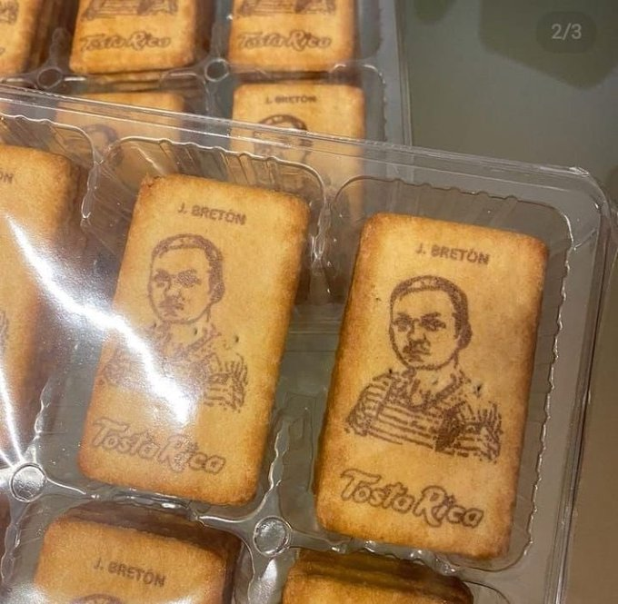

Receta de Galletas Personalizadas

Breve Descripcion de las Galletas:
Tipicas galletas Tosta Rica pero.... con tu personaje famoso favorito, aqui hemos incluido a Tomás Bretón
pero eres libre de elegir a quien más te guste....
Ingredientes necesarios para las galletitas:
- Mantequilla un puñado.
- 400 gramos de harina (no rates con marca blanca).
- Agua.
- Azucar moreno.
- Esencia de vinilla o de otra cosa.
Pasos para preparar la galleta de Bretón:
- Mezclar los ingredientes en un bol.
- Calentar el horno a 180º.
- Sacamos las galletas del horno.
Personalizalas con tu asesino favorito
Volver al inicio